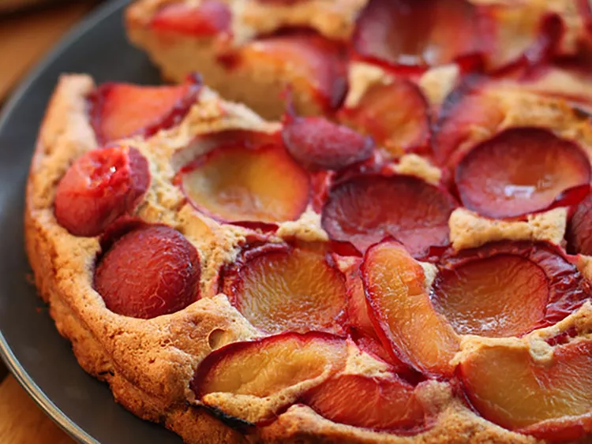

Plum Cake

Description
This is a great plum cake recipe for those who enjoy a lighter cake.
Perfect for entertaining as well as for the family.
Ingredients
- 3 large eggs
- ½ cup butter, softened
- ½ cup white sugar
- 1 teaspoon lemon zest
- 1 cup all-purpose flour
- ½ teaspoon baking powder
- 1 ¼ cups plums, pitted and quartered
Steps
-
Preheat the oven to 375 degrees F (190 degrees C). Grease and flour a
9-inch tube pan.
-
Separate eggs into whites and yolks. Beat egg whites until stiff peaks
form; set aside.
-
Beat butter and sugar together in a large bowl until light and fluffy.
Beat in egg yolks and lemon zest.
-
Stir flour and baking powder together, then blend into butter mixture.
Gently fold in egg whites. Spread cake batter evenly into the prepared
pan. There will only be a little over an inch of batter. Arrange plums,
skin-side down, in a nice pattern over the batter.
-
Bake in preheated oven until a tester inserted in the center comes out
clean, about 40 minutes. Transfer to a cooling rack and allow to cool
before serving.